Skills:
Time:
Pytorch, Myo
Spring and Summer, 2021
Surface electromyograms (sEMG) signals are often used with machine learning techniques to recognize hand
gestures. This project aims at investigating the performance of Self-Calibrating Asynchronous Domain Adversarial Neural
Network (SCADANN) on recognizing gestures from sEMG recorded across multiple days or even multiple subjects.
Suguru Kanoga proved in the paper that reattachment of sEMG armband devices generally leads to
lower classification accuracies, especially when the sensors are misplaced. If a model
is trained using only sEMG signals recorded on the first few days, errors can range from around 9% to
30%[1].
In order to decrease the classification errors, Ulysee Côté-Allard proposed SCADANN. This algorithm is developed based on
Temporal-Spatial Descriptors (TSD) and Domain-Adversarial Neural Network (DANN). First, all training data are put
into TSD to result in a set of weights. Then, DANN uses the first training session as a labeled source and others
as the unlabeled target. After DANN calibrates the weights, SCADANN recalibrates them again using a labeled first
session of training and several pseudo-labeled training sets
[2].
Here, one session indicates either one wearing position
(for inter-day training) or one subject (for across subject training).
To get myself familiar with sEMG readings, I use
myo-raw
to collect a few datasets. One example segment window is shown in
Using Myo. Result of reusing the code provided by
Ulysee Côté-Allard
is shown in
3DC Result.
Result of applying SCADANN algorithm on
Kanoga's myo dataset
is shown in
Myo Result.
This project uses myo armband to collect sEMG signals on the left forearm. Three sets of data are collected. Each dataset represents one wearing position: neutral, inward rotation, and outward rotation. These positions are explained in Kanoga's paper and the picture below [1]. Assuming that the neutral position is defined when I first put on the myo armband and use the myo sdk to calibrate it, then the inward and outward rotations are around 8mm counter-clockwise and clockwise rotated from this first placement before recording. During each trial, five wave-out, or wrist extension (WE), motions are recorded. Each wave-out lasts around 2 seconds, and there is a 1 second rest period in between each motion. During the recording, my left forearm is placed similar to the demonstration shown below and is held steady.
One example segment is extracted from each dataset. The sampling frequency of myo armband is 200 Hz, so each 1.5s window of signals has 300 readings. The images below show EMG and IMU readings of one segment of motion. As shown in the plots, active sEMG signals are generally noisier when myo is placed on inward and outward rotation positions than when it's placed at the neutral attachment.
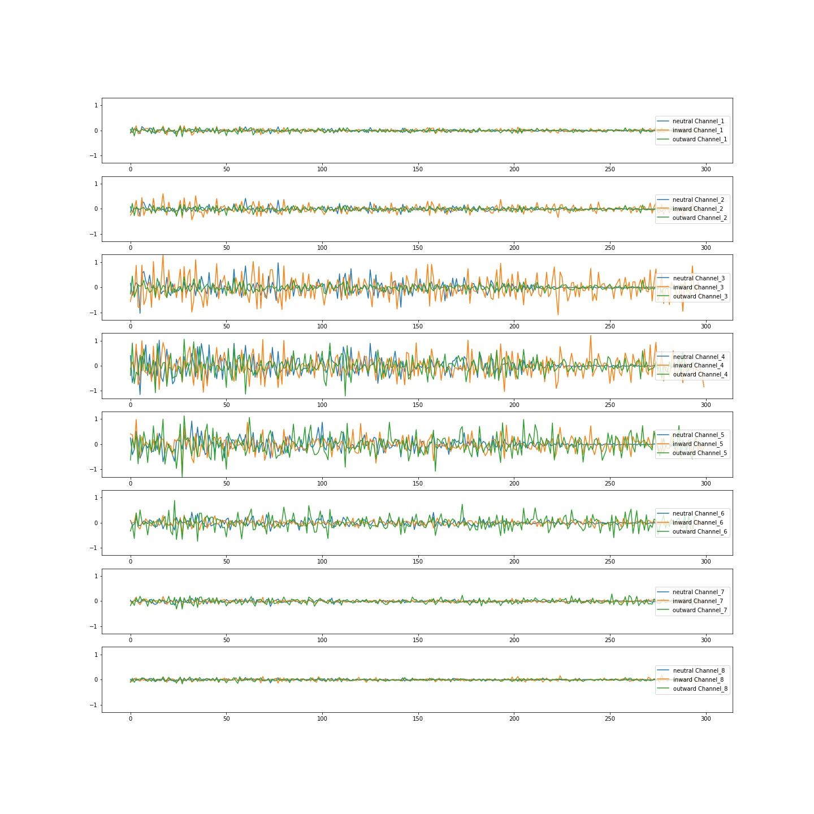 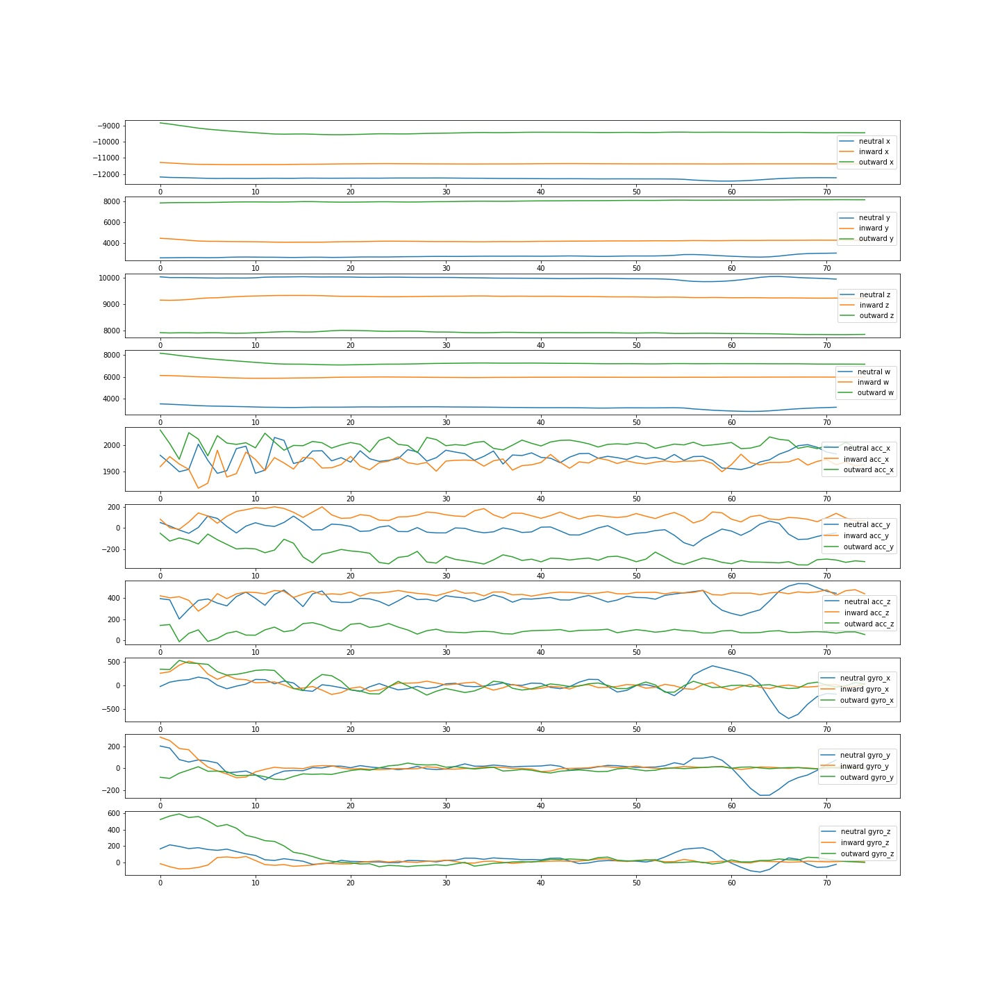As explained in the introduction, SCADANN is trained based on TSD and DANN models. Details of each model are explained in Ulysee's paper [2]. The signals are processed into windows of size 150ms every 100ms and applied with feature extraction functions proposed by Khushaba [4]. The image below shows the result of reusing Ulysee's code training inter-day data for three subjects in the Long-term 3DC Dataset [3]. During the training, four sessions (or four different positions) are recorded for each participant, SCADANN uses the TSD model from the first session and previous DANN models (ie. the second and third DANN models if the fourth session is being trained). Stepping from TSD to DANN, and from DANN to SCADANN models, gesture recognition accuracies increase from 70% to 76% and eventually to 78%. This trend indicates that SCADANN is feasible for increasing the performance of inter-day training within one subject of the 3DC dataset.
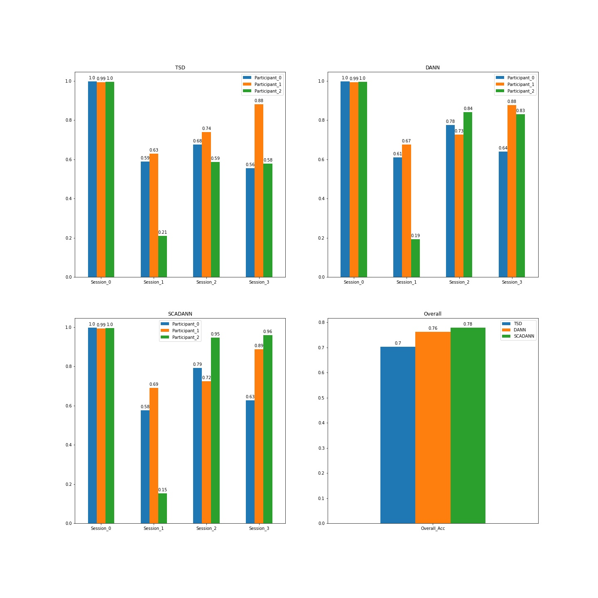To test that SCADANN also works for Kanoga's myo datasets, I modified the way to process the data into a similar shape used in the source code. Instead of defining each day as one session, I include all readings from the same position (neutral position, inward, and outward rotation) in one session. This way, each session contains 10 days (4 trails each day) of training data. The signals are processed into windows of size 250ms every 50ms and applied with Khushaba's feature extraction functions [4]. Another modification to the source code is that the variable percentage_same_gesture_stable, or how accurate a segment of stable examples should be in order to be pseudo labeled, is changed to 75% to allow sufficient, stable, and accurate training data for SCADANN. The image below shows the result of training inter-day sEMG readings within each subject. The performance is similar to the 3DC result. Training across days, locations, and subjects all show increasing trends from TSD to SCADANN, so this algorithm is feasible for training long-term sEMG signals.
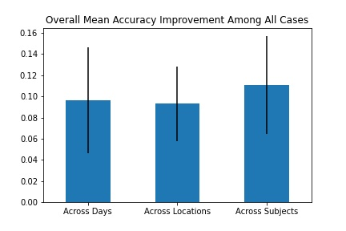To train the models across days, I rewrote the way to process the myo datasets. By default, trials recorded when wearing sensor at the same locations are lumped together. One session now only includes trials on one day. This means that SCADANN is trained for a total of 10 session, or 10 days. To have the train dataset follows a similar pattern, across day training is applied to one subject and one location at a time. The image below shows the result of applying TSD, DANN, and SCADANN to dataset of five subjects wearing sensor at the neutral position.
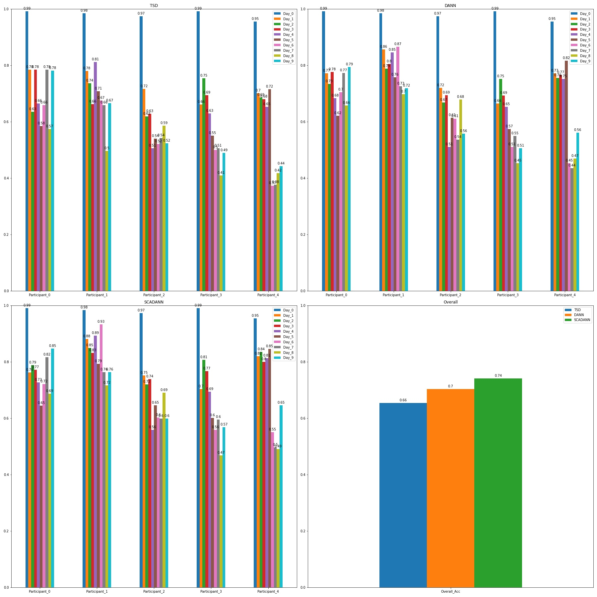Looking only at the average accuracy of individual participants across all days above, overall and most individual accuracies are increasing (the overall accuracy increases from 66% to 74%), so SCADANN is feasible in improving accuracy when trained across days. However, SCADANN does not improve accuracy when training for subject_0 on day 1 and 2; accuracies decrease by 2.2% and 1.2% respectively. Looking closely at the gestures accuracies, some gestures are not recognizable by the model. For instance, when testing accuracy of gesture 4 (UD) for subjnect_0 across 10 days. Accuracies for day 1, 2, 3, 4, and 7 decreases when from TSD to SCADANN. Occasionally, SCADANN increases gesture accuracy (e.g. accuracy increases from 27% to 77% when trained from DANN to SCADNN). Notice that the clipping percentage for SCADANN is set to be 75%, so it is reasonable that certain gestures with low accuracies will result in low performance as well. Another for the decreasing trend may be that the dataset is not sufficient for training a robust model. The total number of trials per wearing location is 40. If distributing these trials among 10 days, each day will only include 4 trials. This means that the model is receiving a bad dataset. Regardless, SCADANN still proves to have a better performance when all tests are considered
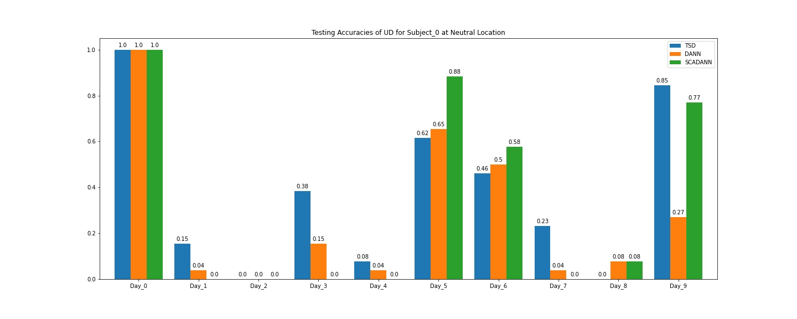When training the long-term myo dataset across locations, SCADANN is using weights from the previous location (in order of neutral position, inward, and outward) on the same subject. Below is a plot of testing accuracies of applying TSD, DANN, and SCADANN in sequence within each location. The overall accuracy increases from 72% to 79%), so SCADANN is feasible in improving accuracy when training across wearing locations. The overall acurracy for inter-location training is generally better than other cases. Though wearing location is to decrease the model performance, it seems to have less effect than other controlling factor such as subjects and days.
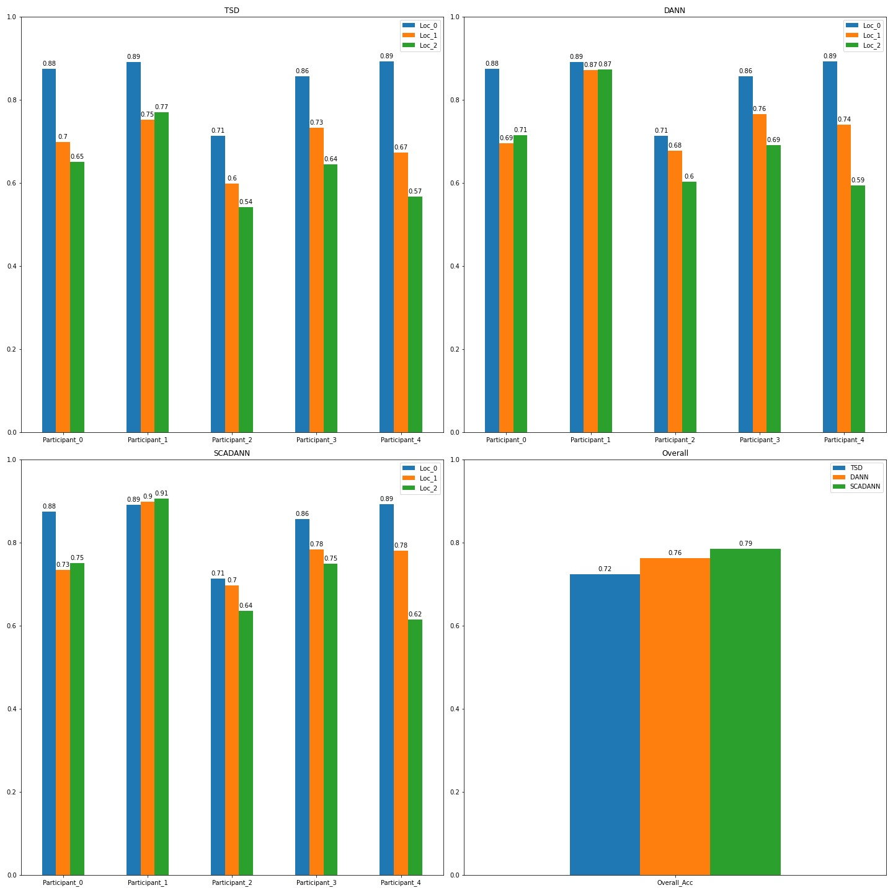It is possible to apply SCADANN algorithm across subjects. To test the performance in this case, I rewrote the way to process the myo datasets. Previously, the sEMG signals are grouped based on positions. To train the models across subjects, one session now contains all readings from the same participant when wearing myo at the same location. To cover all possible cases, training datasets are ordered such that the first group includes signals from a starting subject. Each subject's model is trained based on the previous subject's model. That is, if the starting subject is subject_0, then the following models are trained based on weights for subject_0, subject_1, subject_2, and subject_3 in sequence. The image below shows the result of TSD, DANN, and SCADANN models for each subject when they are trained starting from subject_0. The plots have a similar increasing trend in performance. The overall accuracy increases from 54% to 61% and eventually to 63%.
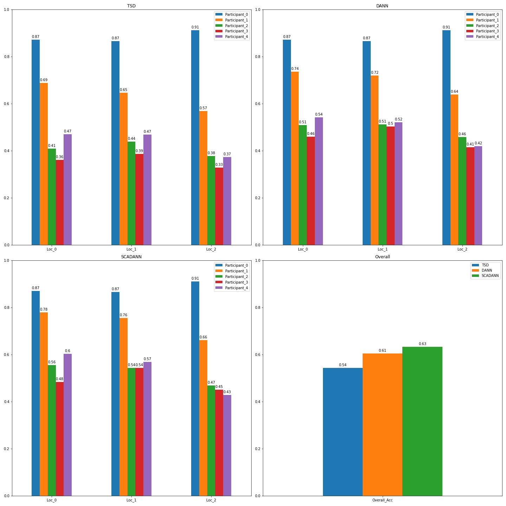The base model trained using subject_0 is not good at predicting gestures for other subjects, so the overall accuracy remains low compared to across location training. Unlike misplacement in device reattachment, classifier performance is worse if a model trained for one person is used on another subject. Considering all cases, subject_3 is best at predicting gestures from subject_4, SCADANN improves accuracy by 21%. Subject_1 is worst at predicting gestures from subject_1, SCADANN only increases by 5%. In conclusion, SCADANN is feasible in increasing the performance of across-subject training; however, the resulting accuracies on each subject are dependent on how well the base model (the first set of TSD weights that use only one participant data) can predict signals from other subjects.
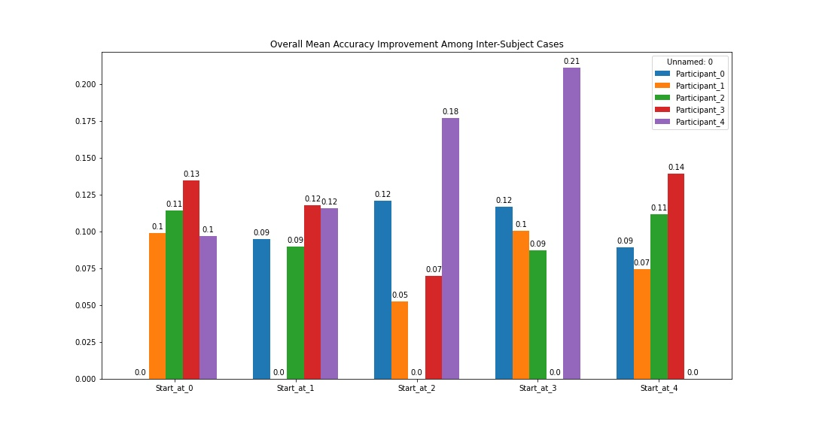Given previous results, a conclusion for training SCADANN is that the base model needs to be good at predicting the following models. To prove it, SCADANN trained based on TSD is compared to results of SCADANN when it's trained based on Convolutional Network (ConvNet) across wearing locations. As shown in the plot below, TSD as a base model has a better performance than ConvNet.
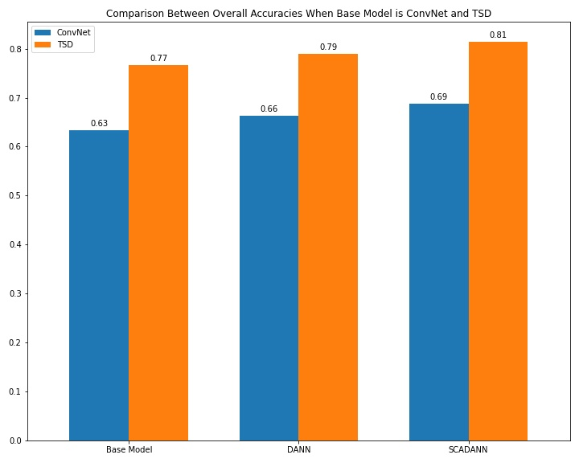Looking closer to accuracies for each wearing location, the biggest increase in performance happens from TSD to SCADANN at wearing location 2 (from 65% to 76%), whereas the smallest increase happens at wearing location 1 of the same training direction (from 69% to 73%). Similarly, SCADANN trained based on ConvNet increases by 11% (from 53% to 64%) at wearing location 1, but it only increases by 6% (from 57% to 63%) at wearing location 2. So, it is possible for SCADANN to largely increase accuracy of one sesssion while keeping a low overall accuracy. However, considering the resulting SCADANN performance, it is best to start from a model with good testing accuracies.
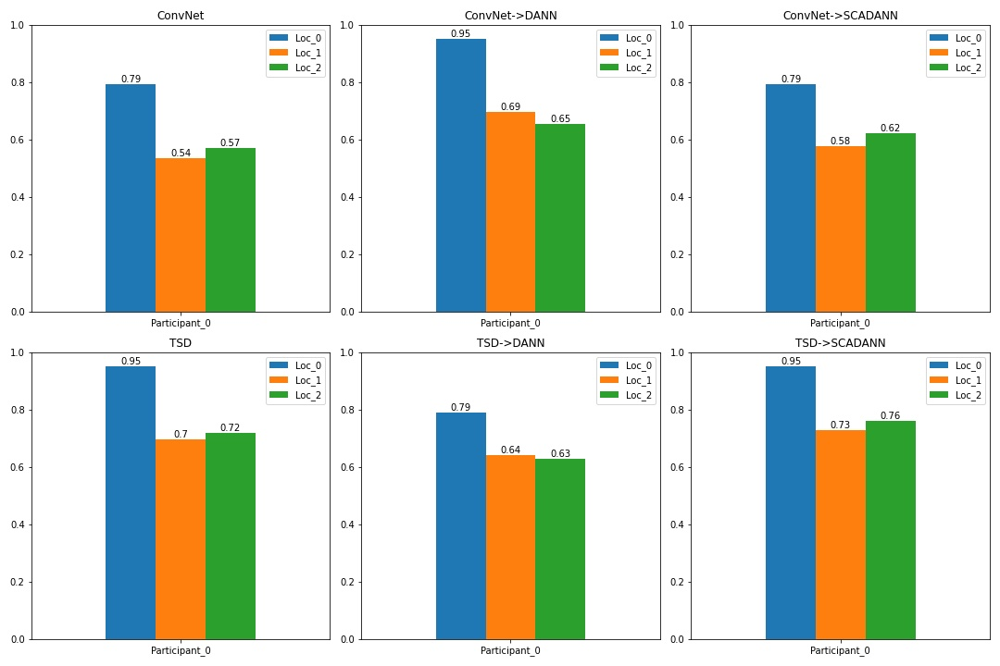In conclusion, SCADANN can improve accuracy in classifying gestures recorded by low-end and low-frequency wearable sensors. To optimize the final performance of the model, the first base model should be trained using a good algorithm and a good dataset. That is, the algorithm should be suitable for training predicting gestures from sEMG signals, and the dataset should include enough amount of recording trails.
[1] Kanoga, Suguru & Kanemura, Atsunori & Asoh, Hideki. (2020). Are armband sEMG devices dense enough for long-term use?—Sensor placement shifts cause significant reduction in recognition accuracy. Biomedical Signal Processing and Control. 60. 101981. 10.1016/j.bspc.2020.101981.
[2] U. Côté-Allard et al., "Unsupervised Domain Adversarial Self-Calibration for Electromyography-Based Gesture Recognition," in IEEE Access, vol. 8, pp. 177941-177955, 2020, doi: 10.1109/ACCESS.2020.3027497.
[3] Ulysse Côté-Allard, Gabriel Gagnon-Turcotte, Angkoon Phinyomark, Kyrre Glette, Erik Scheme, François Laviolette, Benoit Gosselin, December 21, 2019, "Long-term 3DC Dataset", IEEE Dataport, doi: https://dx.doi.org/10.21227/f5ne-ya31.
[4] R. N. Khushaba, A. H. Al-Timemy, A. Al-Ani and A. Al-Jumaily, "A Framework of Temporal-Spatial Descriptors-Based
Feature Extraction for Improved Myoelectric Pattern Recognition," in IEEE Transactions on Neural Systems and
Rehabilitation Engineering, vol. 25, no. 10, pp. 1821-1831, Oct. 2017, doi: 10.1109/TNSRE.2017.2687520.
Long-term 3DC Code
Long-term Myo Code
Long-Term Myo Library
Long-Term Myo Notes